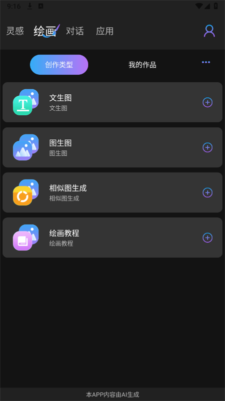
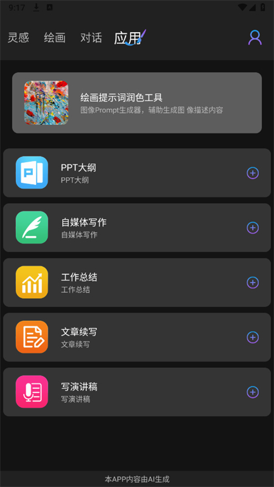

Gamma 深度盘点：从 AI PPT 噱头到 Agent 驱动的可视化工作空间
1.1 亿用户、9000 万美元融资、四类输出一体化——Gamma 到底是一个什么样的工具？它的 Agent 优先工作流、自由编辑器、数据可视化能力和 Pro 档连接器值得认真梳理。
开头：为什么要盘点 Gamma
过去两年 AI 内容创作工具炸了一波又一波。从"一键生成 PPT"的噱头到"AI 做海报"的跟风，大部分产品在模板里叠个模型调用就敢说自己是 AI 驱动。Gamma 有点不一样——去它的官网逛一圈就能感受到这种差别，它不是在传统幻灯片格式上打补丁，而是从一开始就把整个可视化创作流程重构了一遍。
Gamma 的核心设计决策有两个：用 Agent 对话代替模板填空，用卡片布局代替固定幻灯片尺寸。这两条决策让它跳出了 AI PPT 的赛道，变成了一个更通用的可视化内容工作空间。累计 1.1 亿注册用户、9000 万美元融资、PowerPoint 导入声称 97% 视觉准确度——这些数据说明它不是昙花一现。今天就把 Gamma 的能力面完整铺开，聊清楚它到底能做什么、亮点在哪、又有哪些绕不开的短板。

能力域一：Agent 优先的创作工作流
Gamma 5 最大的变化就是把 Agent 推到了最前台。早期 AI 内容工具的通病是"生成完就锁死了，AI 味很浓"——三列布局、通用配图、标题加要点的节奏，观众一眼就能看出这是 AI 做的。Gamma 的产品团队把这个现象叫做"AI 味"，并围绕消除 AI 味做了重构。
Agent 优先工作流的核心不是"帮你填模板"，而是"端到端帮你构建"。你先和 Agent 聊——受众是谁、目标是什么、时长多久、想要什么风格——Agent 会在对话里逐步澄清，然后才开始产出。这和那种上来就吐一堆模板让你选的产品完全不同。
更关键的是，Gamma 的 Agent 不只是往模板里填文字。它能写自定义代码、画形状、在画布上排列元素、生成图片、处理文件、做网页研究，甚至自我检查——比如自动检测文字溢出和图片裁剪问题。这个能力让 Agent 从"内容助手"变成了"能动手干活的合作伙伴"。
Agent 背后跑的是 20 多个 AI 模型的组合，Anthropic、OpenAI、Google 都在里面。Gamma 没公开具体是怎么路由的，但从用户体验来看，它不是简单选一个模型从头跑到尾——不同类型的任务可能分发给不同模型处理，再汇总到一起。
能力域二：四类输出一体化
Gamma 不是单一的演示文稿工具。同一个平台、同一个 Agent，能输出四种东西：演示文稿（Pitch Deck）、正式文档（报告/白皮书/提案）、网站（作品集/落地页）、社交媒体视觉内容。这个"一次创作，四处分发"的能力，在同类产品里确实少见。
为什么这点重要？因为很多团队现在做内容是分散的——演示文稿在 PowerPoint，文档在 Word，网站用 Webflow 或 WordPress，社交媒体视觉又去了 Canva。每个工具都有自己的文件格式和协作流程，来回切换的成本不只是时间，还有内容在不同格式之间丢失的信息和视觉一致性。
Gamma 用卡片布局统一了这四类输出的底层格式。一张卡片既可以出现在演示文稿里，也可以作为网站的一个区块，还能单独截出来当社交媒体配图。Agent 在生成的时候就把所有可能性考虑进去了，你不需要事后再做适配。
能力域三：数据可视化——图表加图示两手抓
Gamma 把数据可视化分成了两类：智能图表处理数值关系，智能图示处理流程和结构。这个分工挺清晰，不像有些工具把所有可视化都塞进一个模块里，结果两边都做不好。
智能图表覆盖了常见的数据表达需求——对比、趋势、占比，生成速度比手动在 Excel 里拉快不少，而且自动和主题配色对齐，不需要你再去调颜色。但 Gamma 图表有一个硬伤：导出到 PPTX 时会变成静态图片，不能再编辑。这是格式兼容问题，不是 Gamma 能解决的。
智能图示这块反而更有意思。它不是一个独立的绘图工具，而是直接嵌在卡片里的——输入 /diagram 就能唤起，画完直接就是卡片的一部分，视觉上和周围内容自动匹配。支持的基本形状包括矩形、圆角矩形、菱形、圆形、箭头、连接线，足够画流程图、架构图、思维导图、时序图这些常见的业务图示。
和 draw.io、Miro、Figma 这些专业工具比，Gamma 图示在复杂程度上确实不如——几十个组件加多层嵌套的系统架构图，用 Gamma 画会很吃力。但它的优势是速度和整合度：你在做演示文稿的过程中随手就能画一个流程图，不需要切到外部工具，画完还能让 Agent 帮忙调风格、加节点。对大多数业务场景来说，这个能力已经够用了。图示的具体操作步骤和与 Agent 配合的进阶技巧，可以查gammaai文档。
能力域四：连接器与外部集成
连接器是 Pro 档的专属功能，目前约有 20 个。核心几个包括 Salesforce、Slack、Google Sheets 同步，还有一些项目管理和通讯工具。
Salesforce 连接器的典型用法是销售团队拉客户数据，让 Agent 自动生成针对性的提案——从客户历史记录里抽取关键信息，填充到预设的 Gamma 模板里。Slack 连接器可以拉取讨论记录和会议转录，Agent 据此生成市场报告或会议纪要。Google Sheets 同步让图表数据实时更新，不需要手动改。
这些连接器的价值不在单个功能有多强，而在打通了 Gamma 和业务数据源之间的墙。之前 Gamma 里的内容都是静态的，改数据得手动改 Gamma；现在数据源变了，Gamma 里的图表自动跟着变。对需要频繁更新提案或报告的团队来说，这个省下来的工作量挺可观。

能力域五：品牌控制与团队协作（Pro 档）
Pro 档解锁了 Workspace 功能，这是 Gamma 从个人工具走向团队工具的关键一步。Workspace 解决的核心问题是"同一个团队产出的内容看起来像同一个团队做的"。
品牌控制模块让管理员可以统一设置配色方案、字体库、Logo 占位。团队里每个人用 Gamma 生成内容时，默认套用这套品牌规范，不需要手动对齐。这个功能听起来简单，但在实际协作中能消除大量重复沟通——之前销售 A 和销售 B 做的提案配色不一样，老板看了也挺头大。
自定义域名（最多 10 个）是另一个 Pro 档功能。你发布的 Gamma 内容可以挂在自己的域名下，比如 pitch.yourcompany.com/xxx，而不是 gamma.site/xxx。对销售和市场团队来说，这个品牌形象的差异是真实存在的——客户看到自己公司域名的链接，和看到第三方工具的域名，信任感不一样。
短板也要说
Gamma 不是没有问题，有些短板还挺硬。
最绕不开的是导出限制。Gamma 的卡片布局是 Web 原生的，垂直可扩展、自由定位、支持嵌入视频和表单——但 PDF 和 PPTX 是固定页面尺寸的印刷/演示格式，两者之间天然有张力。长卡片导出会被自动分页，嵌入视频变成占位图，智能图表在 PPTX 里变成 PNG。Gamma 做了很多转换工作来减小差异，但 100% 保真不现实。官方自己也承认，最好的分发方式是分享链接而不是导出文件。
价格门槛也是一个现实问题。Free 档功能有限，Plus 档能去水印但没有连接器，真正功能最全的 Pro 档年付 $216/seat/年。对个人用户或小团队来说，这个价格在同类工具里不算低——Canva Pro 年付 $120，Miro 免费版足够小团队用。当然，Gamma 把 AI 图像生成、连接器、Analytics、自定义域名这些打包在一起，从价值换算来看 Pro 档其实挺划算，但前提是你真的需要其中两三项。要不要先试用一下？安装包从下载拿就行。
还有一点是复杂场景的覆盖度。Gamma 的智能图示够用但不极限，极复杂的架构图还是得靠专业绘图工具；Agent 生成内容的质量虽然比早期 AI 工具好，但在需要深度专业分析的领域，它的输出大概率还是需要大量人工打磨。它是"帮你做"而不是"替你做"。
什么样的人该用它
综合上面的盘点，Gamma 适合三类人群：
销售团队是 Pro 档的核心用户群。Salesforce 连接器拉客户数据自动生成提案、Analytics 追踪客户交互、发布到自定义域名建立专业形象——这几项功能打包在一起，直接解决了销售团队日常最耗时间的几个环节。如果你是 B2B 销售，需要频繁制作定制化提案，Gamma 值得认真考虑。
市场团队适合用 Workspace 统一品牌调性，用高级 AI 图像生成社交媒体视觉内容，用 Slack 连接器自动从讨论记录生成市场报告。特别是在需要跨渠道分发内容的时候——同一套素材出演示文稿、文档、网站、社交媒体图，这个效率提升是实实在在的。
顾问和独立创作者的需求介于两者之间。顾问需要给客户做提案和报告，Gamma 的品牌控制和 Agent 深度能力有价值；独立创作者可以用 Gamma 做作品集网站（挂自定义域名），或者快速产出社交媒体视觉内容。这两类人用 Pro 档也划算，因为高级 AI 模型和自定义域名的单价加起来已经超过 Pro 档本身了。
反过来，如果你只是偶尔做几页 PPT，或者只需要一个简单的绘图工具，Gamma 可能太重了。它的价值在"一套工具覆盖多种可视化内容需求"这个点上，你用不到这一点，就很难感受到它的优势。